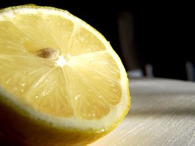
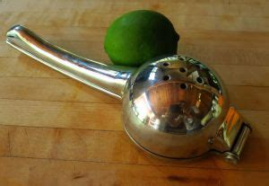
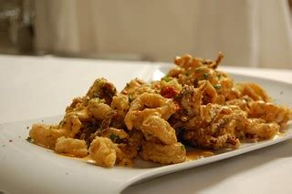
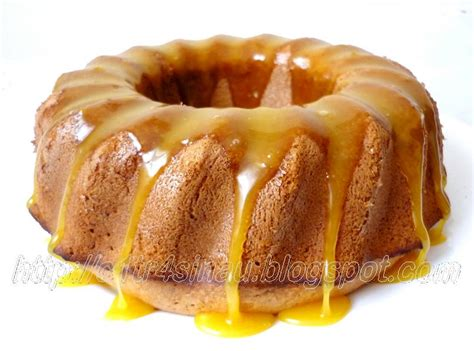

If you random unused lemons in your fridge and you don't know what to do with them, read this before you throw them away. No yapping here, lets get straight to the point.
The first way to use a lemon is lemonade. One way I like to do this is to first make the lemon juice by cutting it in half, taking the seeds out, and squeezing it into a cup. Another less tedious way to do this is by simply using a manual citrus juicer.

There are two diffferent types of manual citrus juicers, a squeeze juicer, and a twist jucier. The image above is a squeeze juicer. The amount of lemon that you want in your cup depends on how sour you want your lemonade to be, but I would put about 4 tablespoons of lemon juice. The next ingredient is water. Add a fair amount compaired to the amount of lemon juice you added (sorry i can't provide an exact measurement but if you're putting 4 tablespoons of lemon then 4 cups of water would be fair). Then just add brown sugar until it tastes like regular lemonade.

Another use case for lemons is for spice or flavoring. One food I like personally with lemon is calamari otherwise it tastes bland. some other examples are buffalo wings, sea food, soup, salad, and a lot more.
A cool way to use lemon juice if you like science, or are just bored is invisible ink. Mix the lemon juice with a little bit of water, and use a cotton swab to write with it on a piece of paper. When you heat the piece of paper, the lemon juice will oxidize and turn brown making the writing visible!

If non of these things are relevant to you, there is still one more option. You can use lemons to make sweet/sour desserts, such as lemon pound cake and other lemon pastries you might find delightful. I won't include recipes here on this website, but you can stiill find really good recipes out there on the web that can be really useful as this one is just my blog site, not a cook book. But if none of these STILL convince you to save those lemons, then go ahead and throw them away, I'm not the boss. Just please promote hygiene and remember to take out the garbage. Okay bye bye!